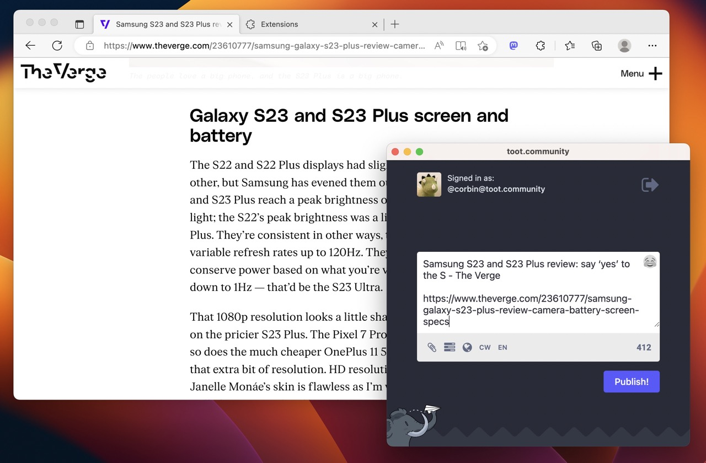

Last year I released Share to Mastodon, a browser extension that made it easy to share links, pages, and text snippets to the Mastodon social media network from your browser. It could use a few improvements, though, so I’ve finished a new version!

The core functionality is still the same: you click the extension’s button, or right-click a page or link and select “Share to Mastodon,” or use the keyboard shortcut, and a small popup window appears with the text and link pre-filled. It’s the same experience you get with the share buttons on sites, but integrated into the browser and customizable for whatever Mastodon server you use.
The main improvement here is support for multiple servers. It’s still a one-click action if you only use one Mastodon server, but if you save more than one in the settings, you pick the one you want from a customizable list.
The list of servers is synchronized with your browser, so you’ll always have your favorites within reach. The extension still loads the compose window hosted on the server itself, so no special authentication or API access is required – if your browser is already logged in, you’re good to go.
In addition to regular Mastodon servers, I’ve added support for Elk, a popular web client for Mastodon. If you add Elk to your list of saved servers, you can share to it just like a regular Mastodon server. This could be expanded to other web Mastodon/Fediverse clients in the future, but I’m not aware of any other popular options that support auto-filling text and links with just URL parameters.
Besides multi-server support, most of the work in this release went towards Firefox compatibility. The original version for Firefox was a backport to the earlier Manifest V2 standard, because Mozilla had not shipped Manifest V3 support yet. That changed with Firefox 109, so with a little bit of work, the extension now has a shared codebase across all browsers.
There are a few other small tweaks in this release, like an outline around the toolbar/menu icons for easier visibility on dark mode, and some bug fixes. Share to Mastodon 2.0 is rolling out now, and you can check out the source code on GitHub.